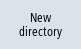

If you only want to backup specific data, then you can select the desired files directly from the data tree and generate an archive.
Archive formats
You can save your archive in the binary format.
You can display the content of the selected files (XML, ini, hsp, syf files, programs) using a preview.
You can display information about the file, such as path, name, date of creation and change, in a Properties window.
Requirement
The access rights depend on the relevant areas and range from protection level 7 (keyswitch position 0) to protection level 2 (password: Service).
Storage locations
-
SD Card under
/user/sinumerik/data/archive or
/oem/sinumerik/data/archive
-
All configured logical drives (USB, network drives)
 | Software option In order to save archives on the SD Card in the user area, you require the "Additional HMI user memory on NCU memory card" option. |
| Notice |
Possible data loss when using USB flash drivesUSB flash drives are not suitable as persistent memory media. |
Procedure
 | 1. | Select the "Setup" operating area. |
 | 2. | Press the "System data" softkey. The data tree opens. |
| | 3. | In the data tree, select the required files from which you want to generate an archive. |
| | | - OR - |
 | | If you want to back up several files or directories, press the "Select" softkey. Make the selection using the cursor keys or mouse. |
 | 4. | If you press the ">>" softkey, further softkeys are displayed on the vertical bar. |
 | 5. | Press the "Preview window" softkey. The contents of the selected file are displayed in a small window. Press the "Preview window" softkey again to close the window. |
 | 6. | Press the "Properties" softkey. Information about the selected file is displayed in a small window. Press the "OK" softkey to close the window. |
 | 7. | Press the "Search" softkey. Enter the required search term in the search dialog and press the "OK" softkey if you wish to search for a specific directory or subdirectory. Note: The place holders "*" (for any character string) and "?" (for any character) make it easier for you to perform a search. |
 | 8. | Press the "Archive" and "Generate archive" softkeys. The "Generate Archive: Select Storage Location" window opens. The "Archive" folder with the subfolders "User" and "Manufacturer" as well as the storage media (e.g. USB) are displayed. |
|  | 9. | Select the required location for archiving and press the "New directory" softkey to create a suitable subdirectory. The "New Directory" window opens. |
| | 10. | Enter the required name and press the "OK" softkey. The directory is created below the selected folder. |
| | 11. | Press the "OK" softkey. The "Generate Archive: Name" window opens. |
| | 12. | Select the format, enter the required name and press the "OK" softkey to archive the file/files. A message informs you if archiving was successful. |
| | 13. | Press the "OK" softkey to confirm the message and end the archiving operation. An archive file is created in the selected directory. |